２０２６年５月２９日〜６月２８日の期間で『まるくじ ミルモでポン！ おやすみたいむ』が販売されました。
遅くなってしまいましたが、私がゲットしたグッズともに紹介いたします。
ミルモのまるくじは前回のハロウィン（２０２５年９月）に続いて今回が３回目。
ミルモファンなら、もうまるくじのシステムはお馴染みですね。
コンビニでよく見かけるキャラクターくじのオンライン版になります（１回あたり７７０円）
まずは今回の商品のラインナップを紹介します。
（画像は記録目的の引用のため、PC上で公式サイトをスクショさせていただきました）
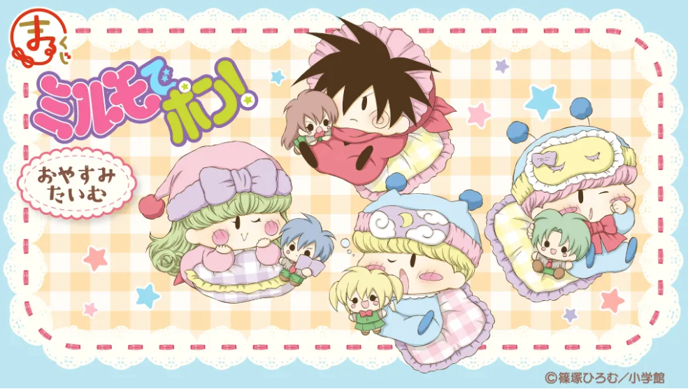
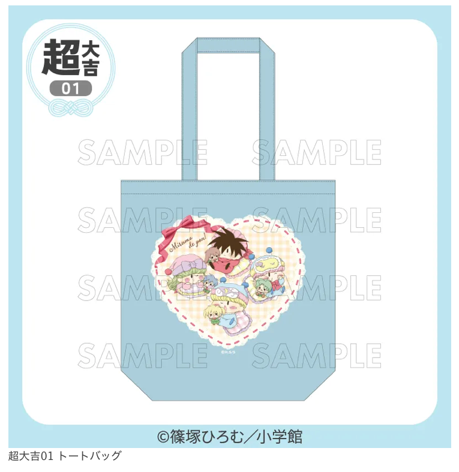
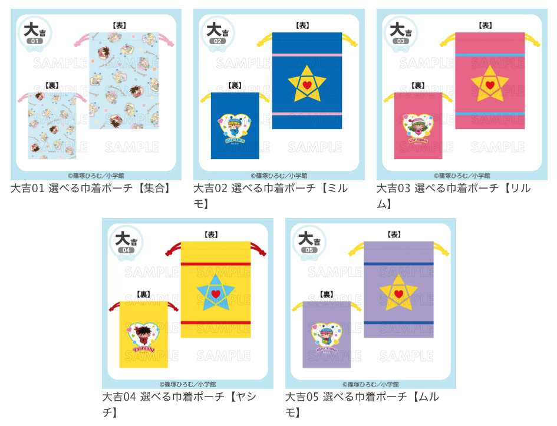
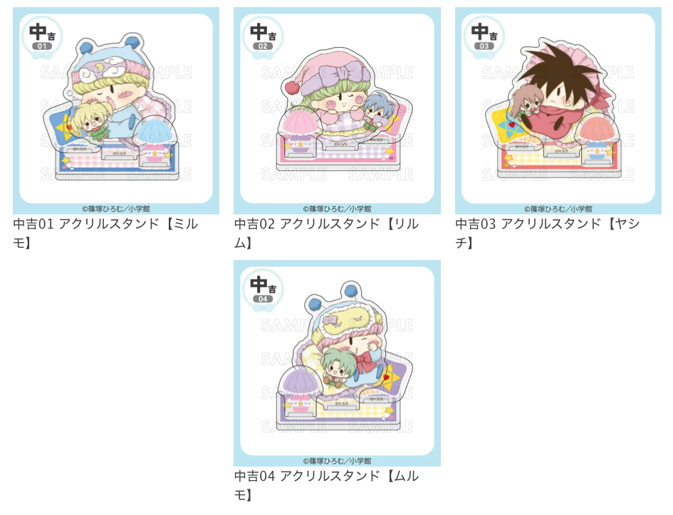
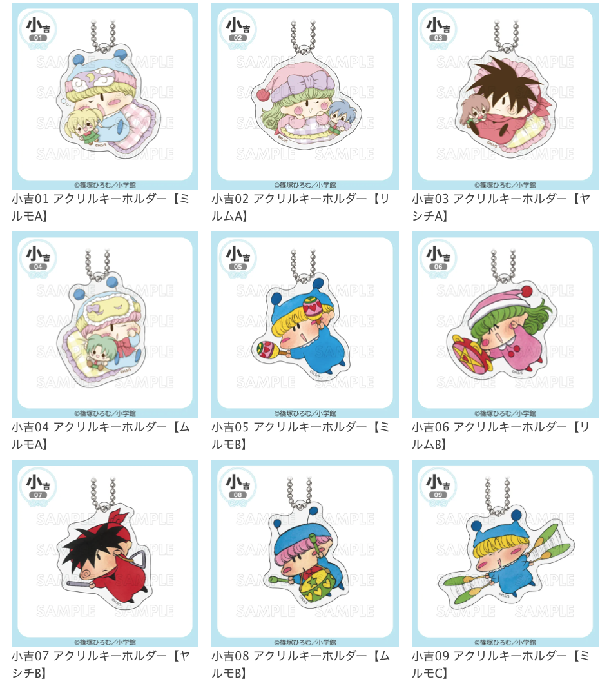
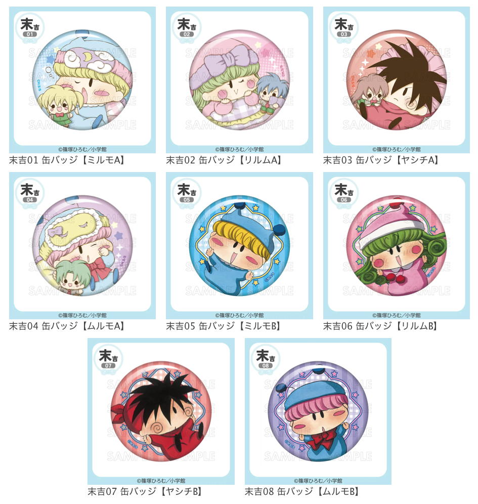
整理すると以下の５種類で、商品によって当選確率が異なります。
- 超大吉 トートバッグ（全１種） 当選確率：1/100
- 大吉 選べる巾着ポーチ（全５種） 当選確率：5/100
- 中吉 アクリルスタンド（全４種） 当選確率：15/100
- 小吉 アクリルキーホルダー（全９種） 当選確率：33/100
- 末吉 缶バッジ（全８種） 当選確率：46/100
タイトルの「おやすみたいむ」の通り、今回の描き下ろしイラストは妖精たちのかわいいお昼寝姿になっています。
それぞれお昼寝に使うアイテムが異なっているのもまたかわいい！
（ヤシチが頭につけているヒラヒラは何かな・・？）
ここからは私がまるくじに挑戦した結果になります。
狙うは超大吉のトートバッグ！
全部で１３回挑戦してみましたが、果たして結果は・・？
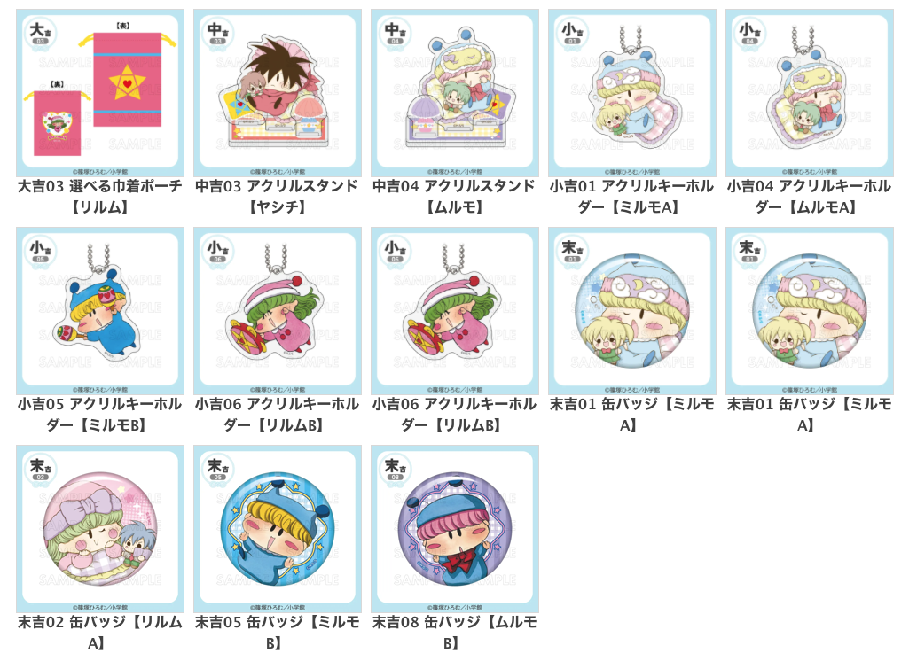
辛うじて大吉が１個当選、あとは中吉・小吉・末吉だらけというイマイチな結果に終わりました・・無念(T-T)
それでは当選したグッズを商品ランクごとに見ていきます。
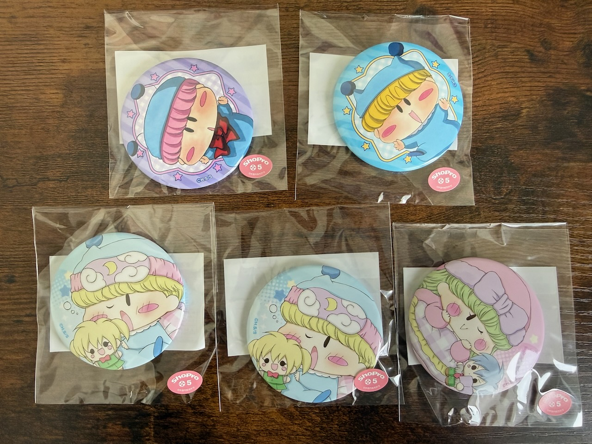
まずは末吉の缶バッジです。
妖精の顔がアップに写っているので遠くからでも目立ちそうですね！
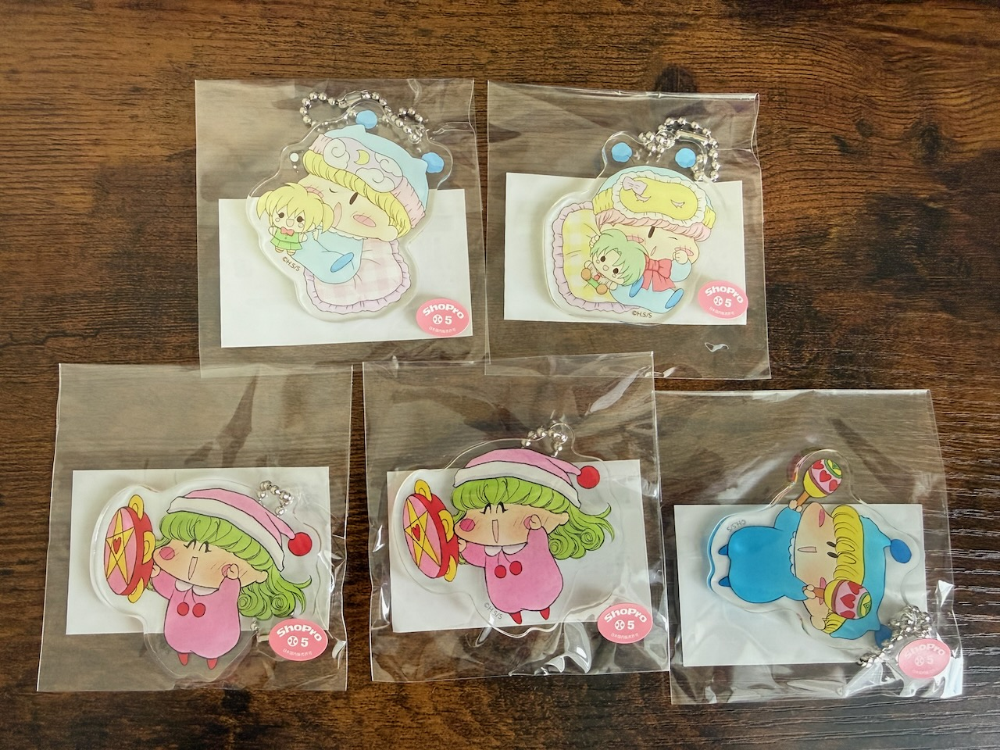
小吉のアクリルキーホルダーです。
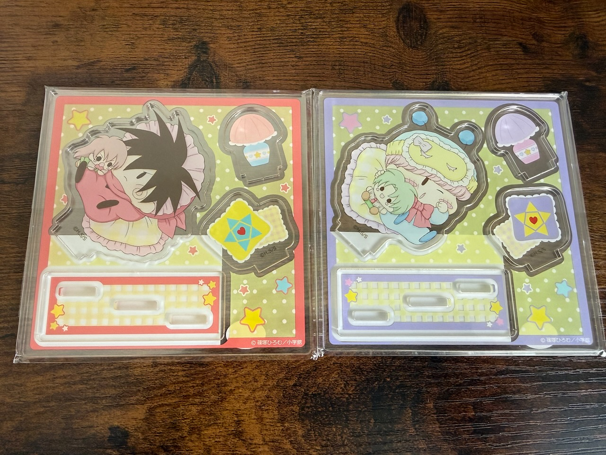
中吉のアクリルスタンドです。
お昼寝に合った小物もしっかり用意されています。
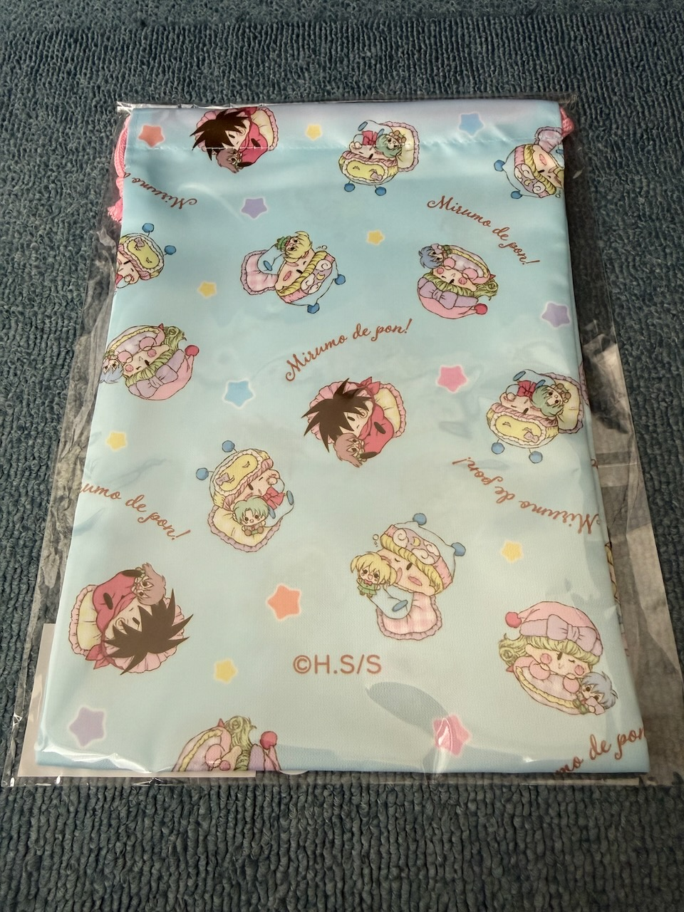
大吉の選べる巾着ポーチです。
当選直後は【リルム】となっていましたが、巾着ポーチのみ好きな柄に変更できます。
私は今回の描き下ろし妖精の集合イラスト柄にしました。
最後にですが、今回もグッズ販売の記念イラストを描きました。
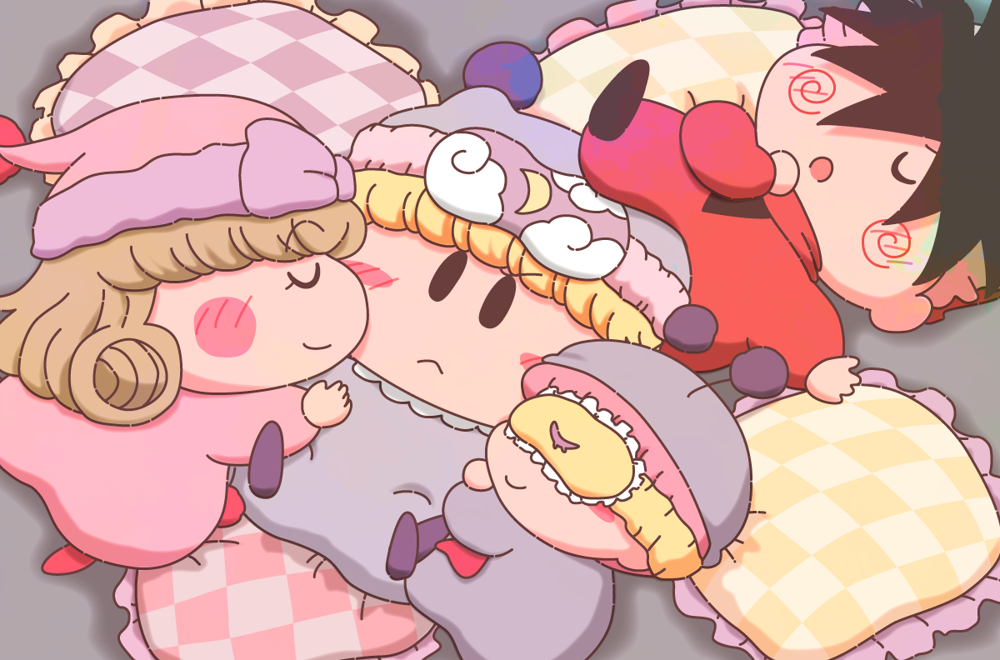
みんななんだかんだでミルモのことが好きなので、無意識のうちにミルモにくっついてしまうという・・。
ヤシチも無防備にミルモに足を乗っけてしまったりして。
さすがにミルモは怒るのか、それとも・・・！？
今回のレポートは以上になります！
まるくじは毎回専用のイラストとともに登場するので、第４弾のまるくじにも期待大ですね。
(2026/9/27)